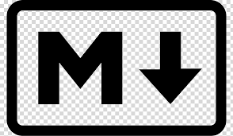

Guia de MarkDown
MarkDown Syntax é uma sintaxe usada para padronizar e facilitar formatação de texto na web, utilizada em aplicativos como Slack e GitHub. É uma linguagem de marcação de texto assim como HTML, mas que utiliza os símbololos para definir a formatação.